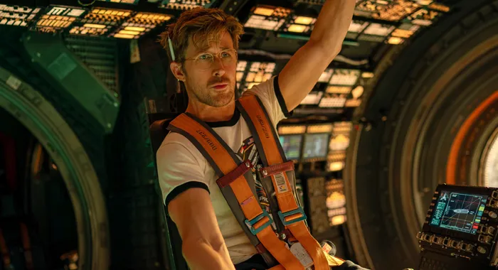

"Amaze, amaze, amaze!"
Based on the bestselling novel by Andy Weir, the film stars Ryan Gosling as Ryland Grace, a middle-school science teacher who wakes up on a spaceship with no memory of who he is or how he got there. He soon discovers he is humanity's last hope on a desperate "Hail Mary" mission to save Earth from an extinction-level event caused by the sun's rapid dimming. Armed with his scientific wits and an unlikely extraterrestrial companion named Rocky, Grace must solve impossible cosmic puzzles to ensure the survival of two civilizations.